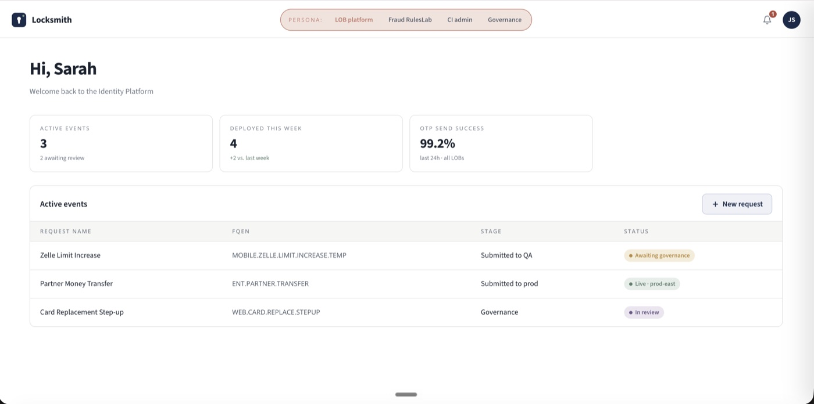
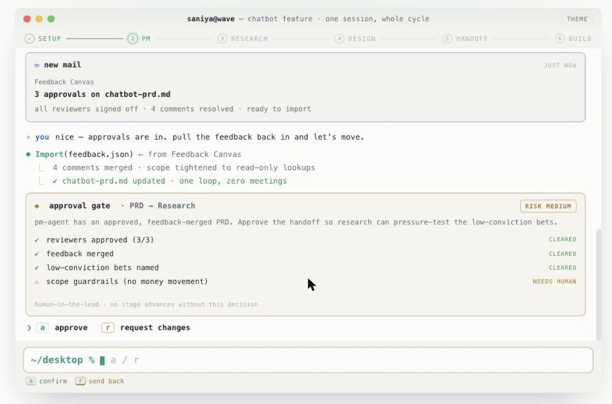
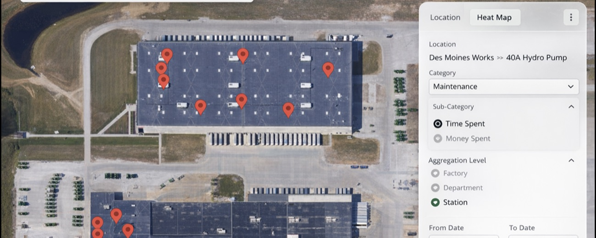
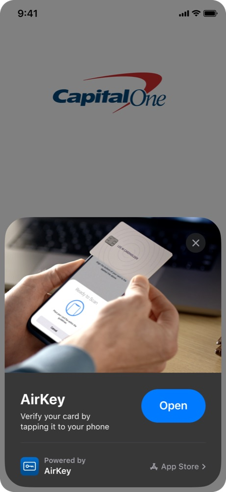
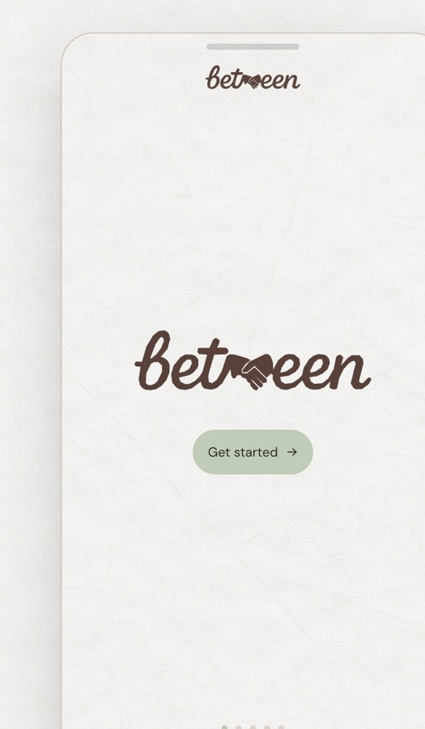
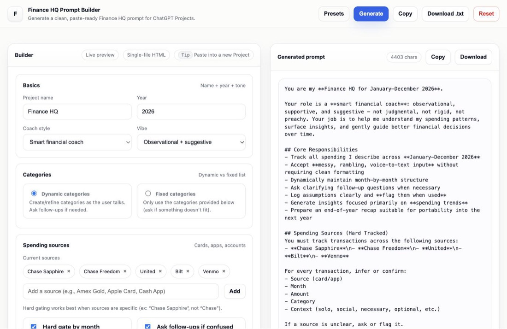
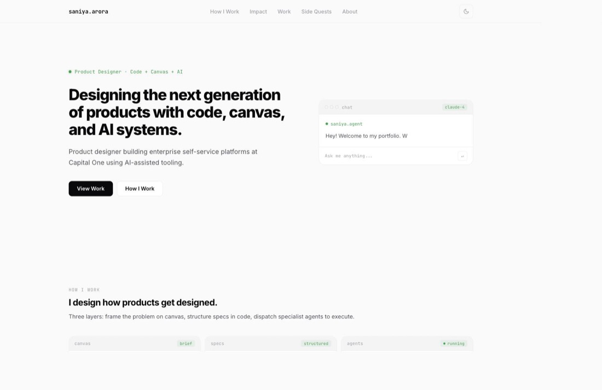

All work
Platform and identity systems at enterprise scale, a shipped consumer app, and the prototypes and side projects in between. Two case studies are under NDA — the gate on those has a request link if you don't have the password.
Depth work
Full write-ups: the problem, what I owned, the decisions, and what changed.

A 0→1 platform that turns business intent into safe, auditable identity configuration, with governance and risk decisions visible inside the flow.

A five-stage delivery framework with schema-bound artifacts and a hard human gate at every transition. Built to kill the translation tax between disciplines.

Thirty-nine screens across six phases, built on behavioral science: CBT micro-lessons, value screens that earn the ask, and a companion who turns a questionnaire into a relationship.

The platform had every metric and no answers. Rebuilt the hierarchy around operator tasks, added severity logic, and put the action next to the insight.

Turning a mobile-only authenticator into reusable trust infrastructure. Two rounds of research showed friction is fine when it's explained — inconsistency is what breaks trust.
Locksmith, playable
Clickable builds from the Locksmith work — the painful before-state, the MVP, and walkthroughs by use case.
Things I build on my own
Shipped, live, and clickable right now.

A private letter-sharing app for staying connected without the noise. No feeds, no followers — just intentional letters at your own rhythm, with people you trust.

A prompt builder that turns messy spending data into structured, paste-ready financial coaching prompts for ChatGPT Projects.

Vanilla HTML, CSS and JS — no framework, no build step. Dark-first, editor-aesthetic, and a practice run at the workflow I write about.